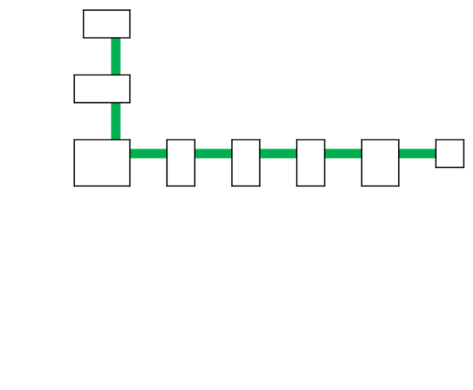
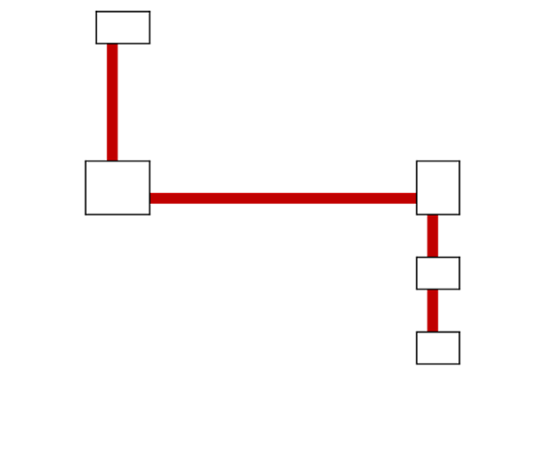
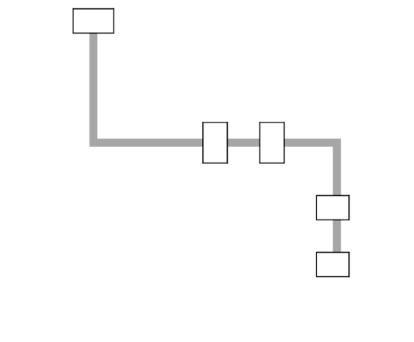
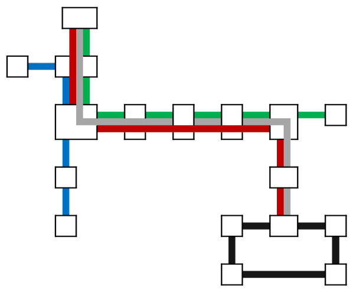

ホーム
駅・路線
時刻表
運賃・切符
沿線施設
企業情報
会社概要
沿革
採用情報
研究
ファン向け
車両紹介
キャラクター
グッズ販売
路線案内
路線や駅を選択してください。
ブルーライン
グリーンライン
レッドライン
シルバーライン
ループライン
全線
   
01 茅ヶ崎
02 鵠沼
03
04
05
06 藤沢
07
08
09
10
11
12 二坂
13 鉄石
14
15
16
17